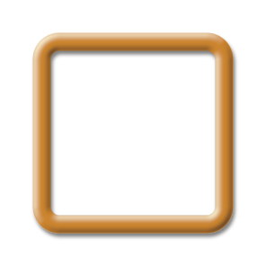
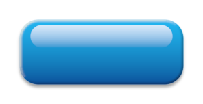
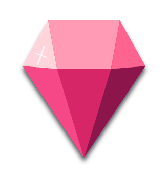
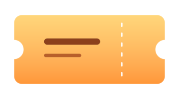

01 / Shape
Start with the outline
Use everyday UI shapes or edit polygon points directly in the Scene view. Adjust the size, position, color and rounded corners with the Inspector and RectTransform.
Create UI assets without leaving Unity. Arrange shapes, add effects and cutouts, then bake buttons, panels, frames and simple icons into PNG sprites.



Your shapes. Your style.
01 / Shape
Use everyday UI shapes or edit polygon points directly in the Scene view. Adjust the size, position, color and rounded corners with the Inspector and RectTransform.
02 / Refine
Combine gradients, outlines, bevels, inner shadows, blur and drop shadows. Use cutouts to create transparent holes, and nested groups to control what gets cut.
03 / Reuse
Preview your work, bake a PNG and update it after editing. Save the source as a Prefab when you want to reuse the design.
Made with Pro

The workflow
Add a SpriteLessGroup to a UI object. Put your shapes underneath it, then arrange and style them.
Turn on the Group's Edit Mode to see the combined result. Add effects or cutouts while keeping the source editable.
Open the Baker, choose a PNG folder and select Bake / Update Sprite. Use the baked Group or assign the PNG to a regular UI Image.
The components
Rectangles, circles, rings, arcs, triangles, chevrons and regular polygons. Configure the shape, color, border and corners in one component.
Freeform polygons with editable vertices, rounded corners and grid snapping. Move or add points in the Scene view to shape the outline.
Gradient, Outline, Bevel, Inner Shadow, Blur and Drop Shadow. Combine different effect types on a shape or Group; one active entry per type, in a fixed processing order.
Add it alongside a SpriteLessImage or SpriteLessPolygon to cut out that shape. The nearest active Group sets its scope, so nested groups let you isolate the cut.
Combines child shapes and displays the baked sprite. Re-enter Edit Mode to make changes. At runtime, it shows the baked sprite and disables the authoring children.
Before you start
Get in touch
Send your question or share your feedback.